El Centro de Integraciones (módulo Integrationhub) es el punto único desde el cual el sistema se conecta con servicios externos: n8n, WhatsApp, ChatLevel.ai u otra API que se necesite. En lugar de escribir una llamada HTTP distinta en cada módulo, todo se declara aquí una sola vez y luego cualquier parte del sistema la invoca por su nombre.
Con el módulo se puede:
| Término | Significado |
|---|---|
| Integración | Un servicio externo con una URL base común. Ejemplos reales del sistema: ChatLevel.ai y N8N_Global. |
| Endpoint | Una operación concreta de esa integración: su nombre único, su ruta, su método HTTP y el tipo de cuerpo. |
| Autenticación | Los campos (token, usuario, contraseña…) que se envían en cada llamada y en qué parte de la petición viajan. |
| Mapeo de campos | La definición de cada dato que se envía y de dónde sale: valor fijo, columna de una tabla, consulta SQL o variable que envía el módulo que invoca. |
| Programación | Una regla cron que dispara automáticamente un endpoint o una API interna. |
| Ejecución (log) | El registro de una llamada: petición enviada, respuesta recibida, código HTTP, tiempo y errores. |
Lote (batch_id) | Identificador que agrupa varias ejecuciones de un mismo proceso. Los logs con lote no se purgan automáticamente. |
| Flow ID | Identificador de la plantilla de WhatsApp (n8n) que se usa en los flujos de saludo de cumpleaños. |
Toda ejecución sigue el mismo circuito, ya venga de la pantalla Ejecutar, de una programación o de otro módulo del sistema (por ejemplo, al aprobar una negociación).
runEndpoint() o a la ruta HTTP de ejecucióntrack_results está activo)| Componente | Responsabilidad |
|---|---|
IntegrationhubControllerModules/Integrationhub/Http/Controllers | Todo el ciclo de vida: listar, crear, editar, eliminar integraciones; administrar autenticación, endpoints, mapeos, consultas y programaciones; ejecutar; consultar historial y errores. |
IntegrationhubController::runEndpoint() | API interna para otros módulos: recibe el nombre del endpoint y los valores, y devuelve la respuesta en formato JSON. |
Entidades (Integration, IntegrationEndpoint, IntegrationFieldMap, …) | Modelos Eloquent, uno por tabla, con sus relaciones (una integración tiene muchos endpoints; un endpoint tiene muchos mapeos de campos). |
| Páginas Vue/Inertia | Index, Create, Edit (con sus 9 pestañas) , Errors y FlowIds. |
RunScheduledIntegrationscomando integrationhub:run-scheduled | Recorre las programaciones vencidas y ejecuta el endpoint o la API interna correspondiente. |
| Jobs y comandos de negocio | ProcessWhatsappFlow, ProcessBirthdayWhatsapp, ProcessCarritoAbandonado y sus comandos, que consumen los endpoints create_contact, set_value_in_custom_fields_for_contact_id e Inicio_contacto_con_flow_id. |
Se entra desde el menú lateral: Centro de Integraciones. El menú ofrece cuatro accesos directos: Listado de Integraciones, Nueva Integración, Errores de Integración y Plantillas / Flujos.
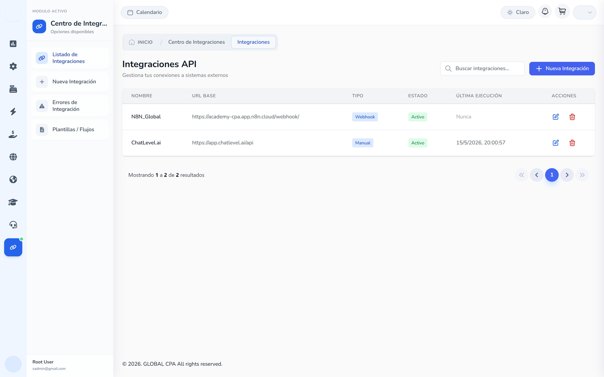
El acceso a cada función está controlado por el middleware de permisos de Spatie. Un usuario que no tenga el permiso correspondiente verá un error de acceso denegado, aunque conozca la URL.
| Permiso | Qué habilita |
|---|---|
integrationhub_dashboard | Reservado para indicadores del módulo. |
integrationhub_listado | Ver el listado, el historial, los errores y las plantillas/flujos. |
integrationhub_crear | Abrir y usar el formulario «Nueva Integración». |
integrationhub_editar | Abrir la pantalla de edición de una integración. |
integrationhub_eliminar | Eliminar integraciones (borra en cascada endpoints, mapeos, programaciones y logs). |
integrationhub_ejecutar | Ejecutar endpoints desde la interfaz o por las rutas HTTP de ejecución. |
web y exigen sesión iniciada y correo verificado (auth + verified). Las rutas de ejecución añaden además el permiso integrationhub_ejecutar. El listado completo de rutas está en el Anexo A.Pantalla de entrada del módulo (integrationhub/listado). Muestra las integraciones paginadas (10 por página) y permite buscar por nombre.
| Columna | Qué muestra |
|---|---|
| Nombre | El identificador de la integración tal como se usa internamente. |
| URL Base | El dominio/path base sobre el que se construye cada endpoint. |
| Tipo | Manual, Programada o Webhook. |
| Estado | Activo / Inactivo. Una integración inactiva no se ejecuta por las programaciones. |
| Última Ejecución | Fecha de la última vez que se ejecutó algo de esa integración (o «Nunca»). |
| Acciones | Editar (abre la pantalla de pestañas) y Eliminar (con confirmación; borra también todos sus datos). |
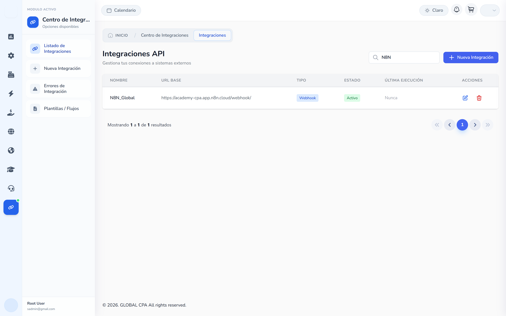
search en la URL, por lo que el enlace se puede compartir.Desde Nueva Integración (o el botón del listado) se abre el formulario de creación. Sólo hacen falta el nombre y la URL base; el resto tiene valores por defecto razonables.
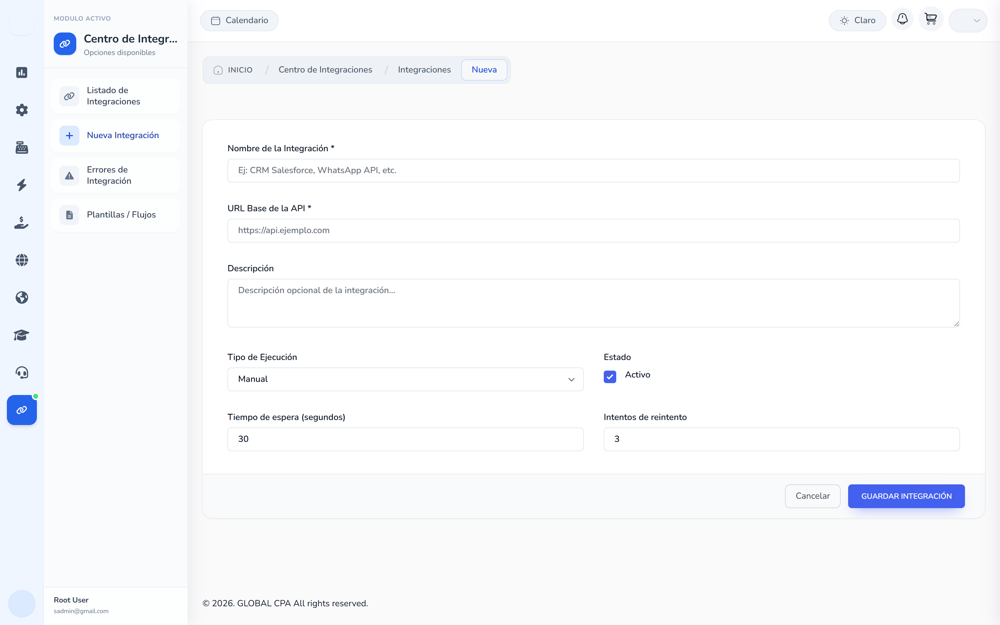
| Campo | Obligatorio | Descripción y validaciones |
|---|---|---|
| Nombre de la Integración | Sí | Texto de hasta 100 caracteres. Es el nombre con el que se identifica el servicio (por ejemplo N8N_Global). |
| URL Base de la API | Sí | Debe ser una URL válida de hasta 500 caracteres y terminar en la parte común de todos los endpoints (por ejemplo https://academy-cpa.app.n8n.cloud/webhook/). No incluyas el nombre del endpoint: cada endpoint añade su propia ruta. |
| Descripción | No | Texto libre para dejar constancia de para qué se usa la integración. |
| Tipo de Ejecución | Sí | Manual (se dispara a mano o desde otro módulo), Programada (por cron) o Webhook (la usa el sistema cuando ocurre un evento, como la aprobación de una negociación). Es informativo: no cambia el comportamiento de la ejecución. |
| Estado | No | Activo por defecto. Si se desactiva, las programaciones de esa integración se saltan. |
| Tiempo de espera | No | Entre 5 y 300 segundos (30 por defecto). Se aplica de verdad: es el tiempo máximo que el sistema espera la respuesta de la API externa. |
| Intentos de reintento | No | Entre 0 y 10 (3 por defecto). Se guarda en la configuración de la integración, pero hoy no se usa al enviar: no hay reintentos automáticos. |
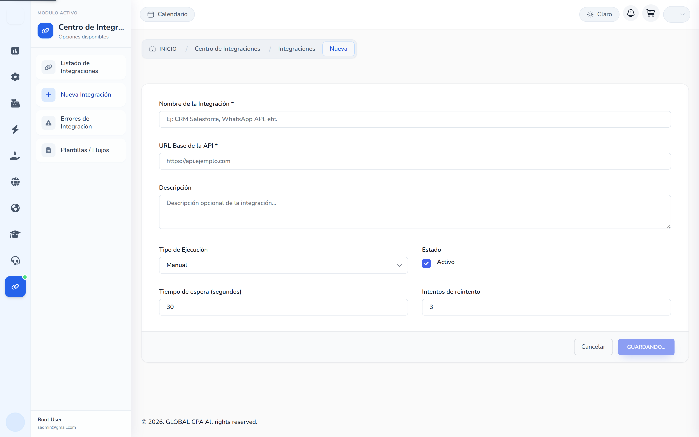
Al guardar correctamente, el sistema redirige directamente a la pantalla de edición de la integración recién creada, donde se configuran autenticación, endpoints, mapeos y programaciones.
Toda la configuración vive en una sola pantalla con nueve pestañas. La primera (Datos Generales) mantiene los mismos campos de la creación; las demás se explican en las secciones siguientes.
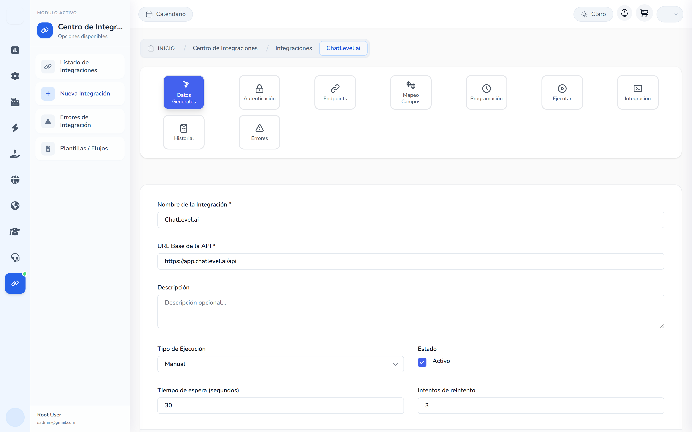
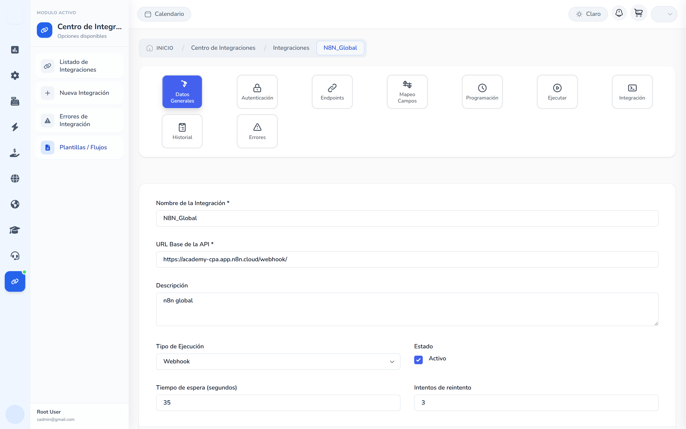
N8N_Global, la integración de tipo Webhook que usa el módulo Commercial para publicar la negociación aprobada.Permite cambiar nombre, URL base, descripción, tipo de ejecución, estado, tiempo de espera y reintentos. Los cambios se guardan con Guardar Cambios. Cambiar la URL base afecta a todos los endpoints de la integración, porque la URL final se arma como URL base + ruta del endpoint.
Define qué credenciales viajan en cada llamada. Cada registro tiene un nombre, un tipo, un valor y una ubicación.
| Campo | Opciones y comportamiento |
|---|---|
| Nombre del Campo | Nombre real de la cabecera, del parámetro o del campo del cuerpo. Por ejemplo la integración real ChatLevel.ai usa X-ACCESS-TOKEN. |
| Ubicación | Header (cabecera HTTP), Body (dentro del cuerpo) o Query Param (añadido a la URL). |
| Tipo de Campo | Texto, Password, Token, API Key, OAuth o Basic Auth. El tipo determina que el valor se enmascare en el historial. |
| Valor del Campo | El token o la clave. En Basic Auth se piden por separado Usuario y Contraseña y el sistema construye la cabecera Authorization: Basic … en Base64. |
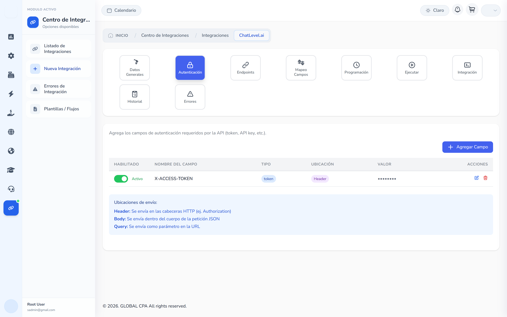
X-ACCESS-TOKEN de tipo token, habilitada. Se puede editar, activar/desactivar o eliminar cada campo.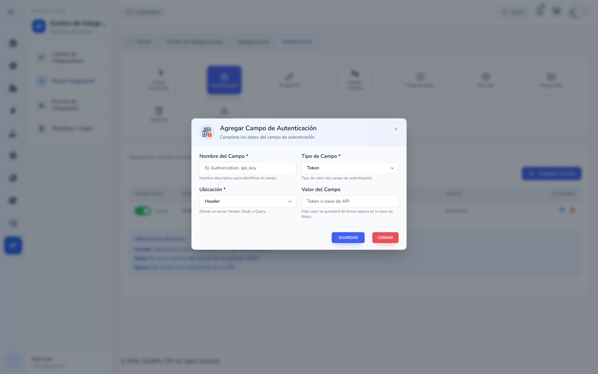
x de la misma longitud. Aun así, se guardan en la base de datos en texto plano, así que el acceso a la tabla integration_auth debe estar restringido.Un endpoint es una operación del servicio externo. Se define con cinco datos y un interruptor de estado.
| Campo | Descripción |
|---|---|
| Nombre | Identificador único en todo el sistema (no sólo dentro de la integración). El sistema rechaza nombres repetidos porque son la clave para ejecutar el endpoint desde otros módulos. |
| Ruta del Endpoint | Parte que se añade a la URL base. Admite marcadores entre llaves, por ejemplo contacts/{contact_id}. |
| Método HTTP | GET, POST, PUT, DELETE o PATCH. |
| Tipo de Cuerpo | JSON, XML, Form Data, Raw o Ninguno. Determina cómo se serializa el cuerpo y la cabecera Content-Type que se envía. |
| Estado | Activo / Inactivo. Los endpoints inactivos se omiten en las ejecuciones programadas «de todos los endpoints». |
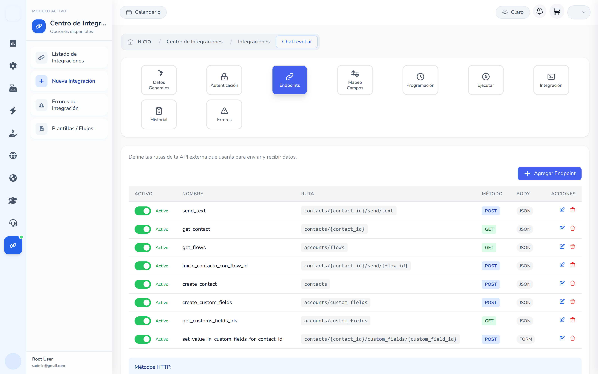
send_text, get_contact, get_flows, Inicio_contacto_con_flow_id, create_contact, create_custom_fields, get_customs_fields_ids y set_value_in_custom_fields_for_contact_id. Cada fila muestra método, ruta, tipo de cuerpo y estado, con acciones para editar, desactivar o eliminar.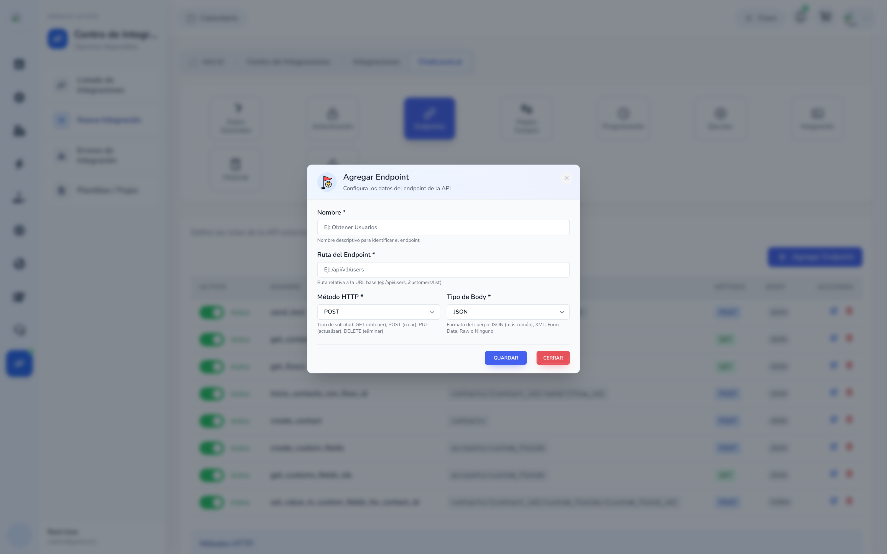
n8n_post_negociacion). El código de los módulos llama a ese nombre literal.Es la pestaña más potente: define cada dato que se envía y de dónde sale. Se puede filtrar por endpoint y se puede tener un mapeo distinto por endpoint.
| Campo | Descripción |
|---|---|
| Endpoint | A qué endpoint pertenece el mapeo. |
| Tipo de Campo | Estático, Campo de Tabla, Consulta, Calculado o Personalizado. Es descriptivo: documenta la intención del mapeo. |
| Tipo de Origen | Estático (valor fijo), Base de Datos (tabla y columna), Consulta SQL (sólo lectura) o Función. |
| Ubicación del Campo | Dónde viaja el dato: Parámetro URL (?key=value), Ruta URL ({campo}), Cuerpo JSON (body) o Cabecera HTTP (header). |
| Tabla / Campo de Origen | Cuando el origen es Base de Datos, los desplegables se llenan con las tablas y columnas reales de la base de datos. |
| Consulta SQL | Cuando el origen es Consulta SQL. Se admite SELECT y WITH; se usa el primer valor de la primera fila y, si la consulta no devuelve filas, se envía el Valor por Defecto. |
| Valor por Defecto | Valor que se envía si el campo queda vacío o si la consulta no devuelve datos. |
| Campo Clave | El nombre de la clave que viaja en el cuerpo o en la URL. También es la clave con la que un módulo puede sobrescribir el valor al ejecutar. |
| Campo Valor | El valor fijo o el marcador de variable del que se toma el dato. |
| Obligatoriedad | Requerido u Opcional. El sistema usa esta marca para generar el ejemplo de código de la pestaña Integración y para separar los valores que el módulo debería enviar siempre. |
| Subitems | Para armar objetos u arreglos anidados (por ejemplo una lista de ítems): se elige la estructura Object o Array, se agregan los subcampos y, en modo Array, la consulta SQL que devuelve las filas. |
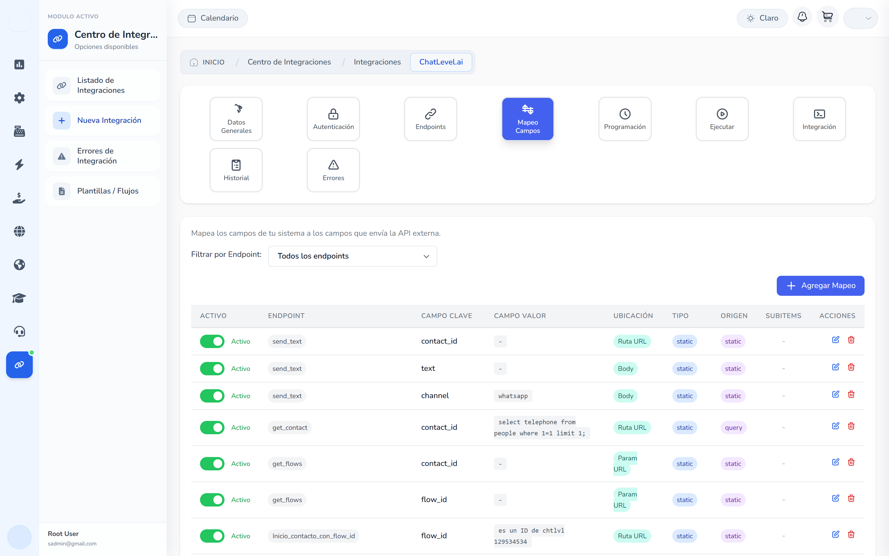
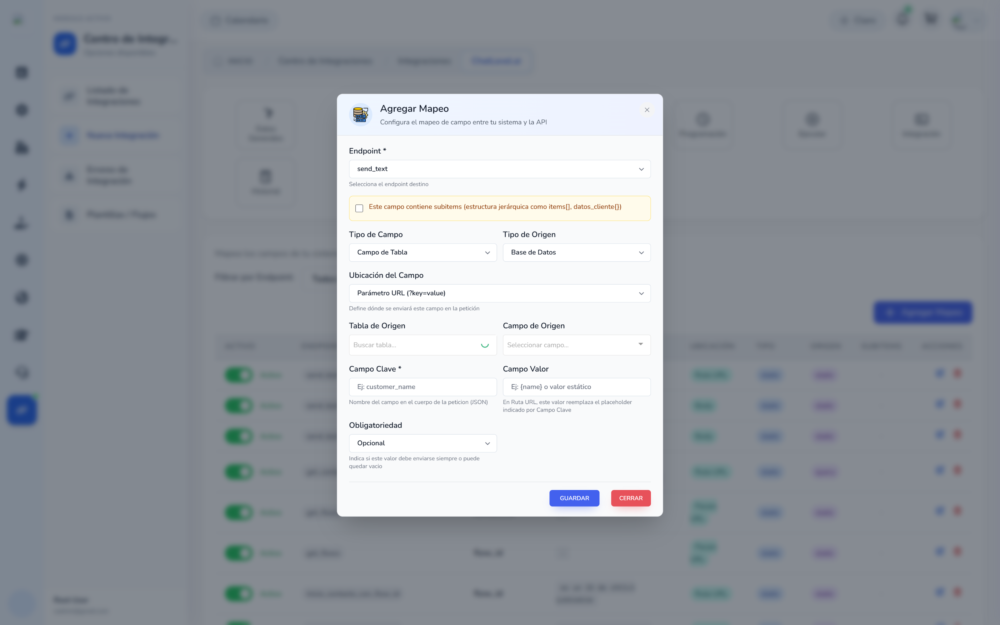
SELECT/WITH. El sistema bloquea INSERT, UPDATE, DELETE, TRUNCATE, CREATE/ALTER/DROP, CALL, GRANT y similares, y rechaza varias sentencias en el mismo texto.{campo}; en caso contrario el sistema rechaza el mapeo con el mensaje «La ruta del endpoint debe contener el placeholder {campo}».Permite ejecutar automáticamente, por expresión cron, un endpoint de la integración o una API interna del módulo.
| Campo | Descripción |
|---|---|
| Frecuencia sugerida | Ayuda para armar la expresión: cada cierta cantidad de minutos, cada hora, diario, semanal, mensual o una expresión personalizada. |
| Qué debe ejecutar | Endpoint de esta integración o API REST del módulo Integrationhub. En el segundo caso se elige la ruta por su nombre y se envía un JSON como carga útil. |
| Endpoint a ejecutar | Uno de los endpoints de la integración. Si no se elige ninguno, la programación ejecuta todos los endpoints activos. |
| Expresión Cron | Cinco campos (minuto hora día mes día-semana), por ejemplo */20 * * * * para cada 20 minutos. |
| Estado | Activo / Inactivo. |
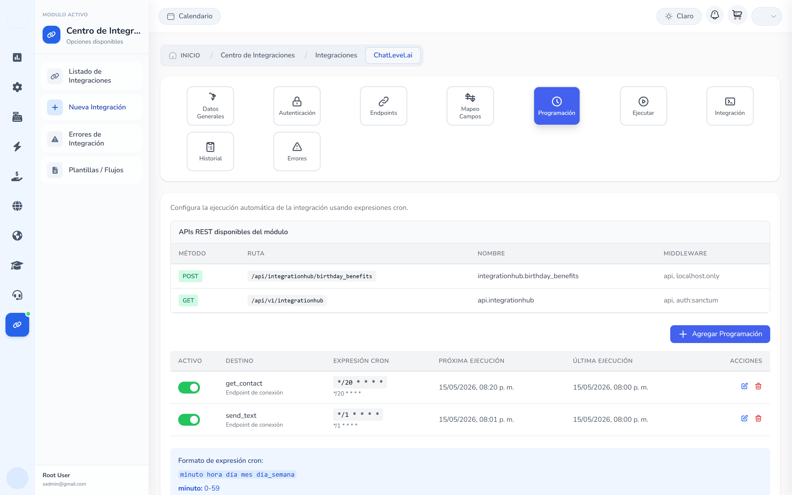
get_contact cada 20 minutos y send_text cada minuto, ambas sobre ChatLevel.ai, mostrando su última y su próxima ejecución.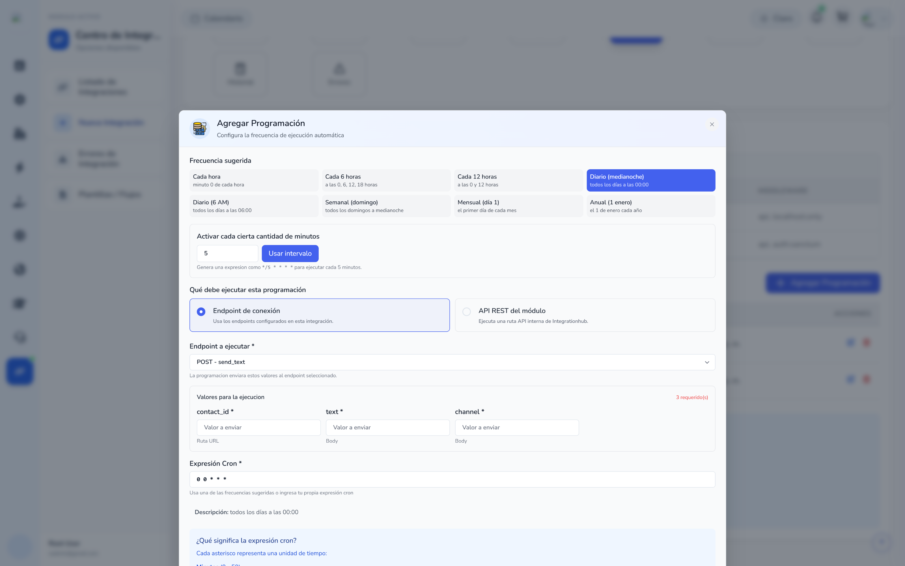
integrationhub:run-scheduled, que el planificador ejecuta cada minuto (sin solapamiento). Cuando el destino es una API interna del módulo, la llamada se hace desde el propio servidor con host localhost, que es lo que exige el filtro de esa ruta. Detalles en la sección 9.Es el banco de pruebas del módulo: permite probar un endpoint real y ver exactamente qué se envió y qué respondió la API externa.
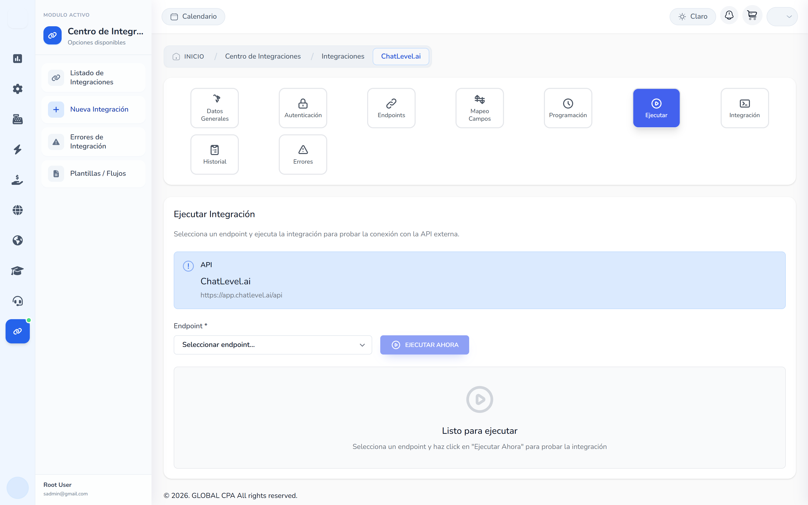
| Elemento | Significado |
|---|---|
| Ejecución exitosa / Error | Resultado general. Se considera exitoso cuando el código HTTP está entre 200 y 299. |
| Código de estado | El código HTTP devuelto por la API externa. |
| Mensaje | Mensaje del sistema o, si la API externa falló, el mensaje que ella devolvió (por ejemplo message o error del JSON de respuesta). |
| Ver datos enviados | El detalle completo de la petición: método, URL, cabeceras, query y cuerpo, con los datos sensibles enmascarados. |
| Ver datos recibidos | El detalle de la respuesta: código, cabeceras y cuerpo. |
| «Mostrar detalle completo» | Amplía o resume el JSON mostrado. |
Genera automáticamente el código PHP que otro módulo necesita para invocar ese endpoint. Se elige el endpoint y el sistema escribe el ejemplo con las claves requeridas y las opcionales, listo para copiar.
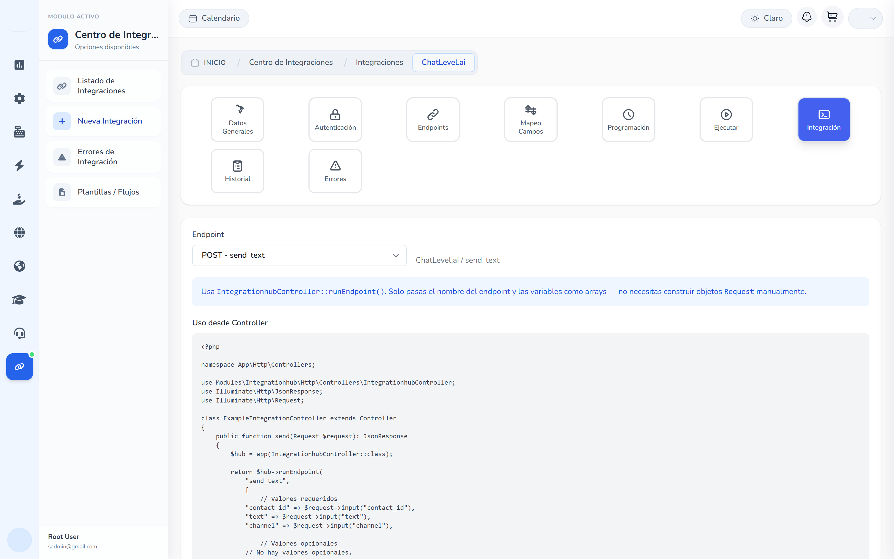
runEndpoint(), incluyendo los valores requeridos del endpoint, los opcionales comentados y las variantes de extra_params, track_results y batch_id.Muestra las ejecuciones registradas de la integración, de la más reciente a la más antigua, con filtros y paginación.
| Filtro | Uso |
|---|---|
| Estado | Todos, éxito o error. |
| Lote | Desplegable con los lotes (batch_id) disponibles. |
| Buscar lote | Se pega el batch_id devuelto por una ejecución por API REST para ver todas sus llamadas juntas. |
| Buscar | Busca por nombre de endpoint, mensaje de error o lote. |
| Desde / Hasta | Rango de fechas de ejecución. |
| Registros por página | 10, 25, 50 o 100 (el servidor no devuelve más de 100 por página). |
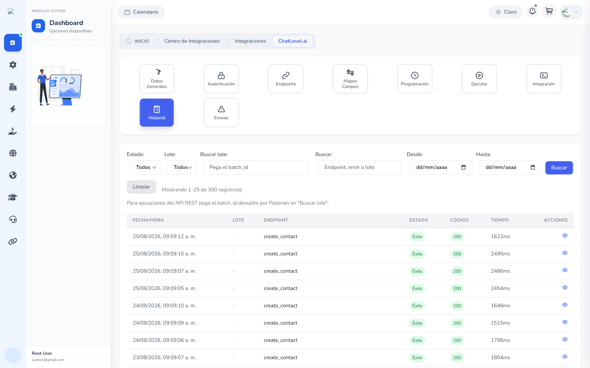
El icono de detalle abre la ficha completa de la ejecución:
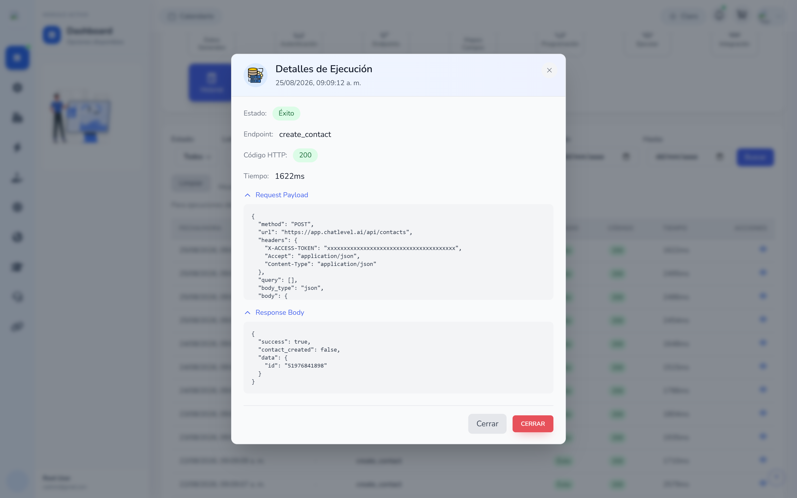
x) mientras el resto de la petición y la respuesta se guardan completos.batch_id (lotes de procesos masivos) no entran en esa limpieza.Muestra los errores registrados por el módulo; se puede buscar por texto, filtrar por fechas, ver el detalle y borrar. Cada error trae su origen, que normalmente es la clase que lo provocó (por ejemplo el job ProcessWhatsappFlow).
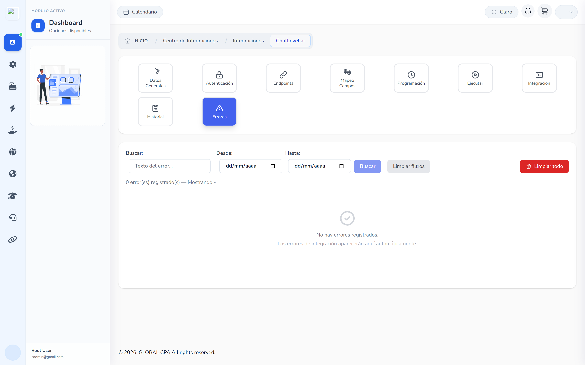
Es la vista transversal de errores de todas las integraciones (integrationhub/errores). Tiene buscador, rango de fechas, botón «Limpiar filtros» y, por registro, el detalle y la opción de eliminar; además permite vaciar el registro completo.
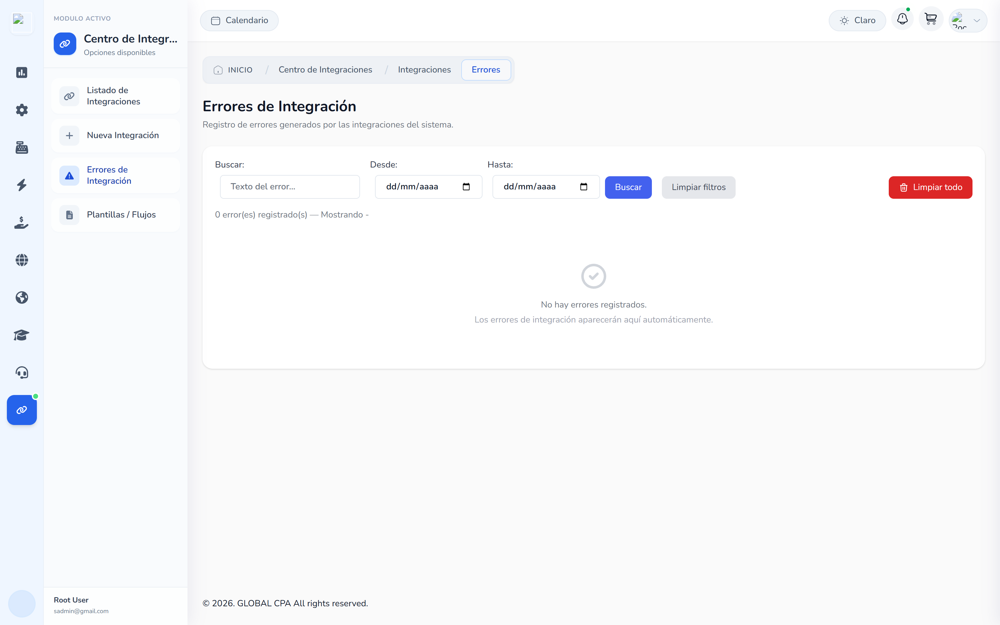
Guarda los identificadores de las plantillas de WhatsApp (flow ids) que usan los procesos de integración. El sistema crea automáticamente las dos claves que necesita y sólo hay que mantener al día el identificador.
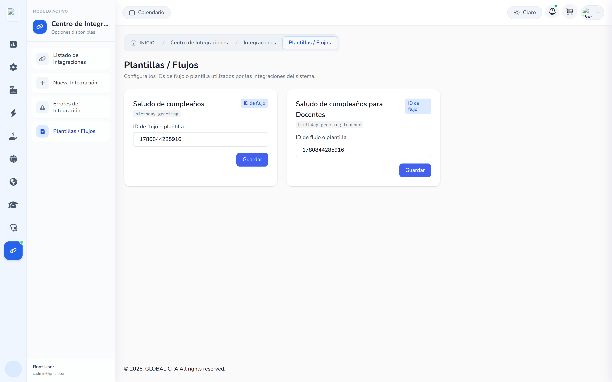
birthday_greeting (Saludo de cumpleaños) y birthday_greeting_teacher (Saludo de cumpleaños para Docentes). Cada tarjeta permite guardar su identificador de flujo.| Clave | Qué proceso la usa |
|---|---|
birthday_greeting | Saludo de cumpleaños para alumnos (job ProcessBirthdayWhatsapp). |
birthday_greeting_teacher | Saludo de cumpleaños para docentes: se elige automáticamente cuando la persona tiene el rol Docente. |
La forma recomendada de usar una integración desde el código es runEndpoint(). Sólo hay que pasar el nombre del endpoint y los valores; el módulo se encarga de la URL, la autenticación, los mapeos y el registro en el historial.
use Modules\Integrationhub\Http\Controllers\IntegrationhubController;
// Ejecución simple: se envían sólo los valores que el endpoint necesita
$respuesta = app(IntegrationhubController::class)->runEndpoint('create_contact', [
'phone' => '51987654321',
'email' => 'persona@correo.com',
'first_name' => 'Nombre Apellido',
]);
// Respuesta JSON: message, status_code, request, received, response, executed_at
if ($respuesta->getData(true)['status_code'] === 200) {
// la API externa aceptó la llamada
}
| Parámetro | Para qué sirve |
|---|---|
$endpoint | Nombre exacto del endpoint (único en todo el sistema). |
$fieldValues | Valores que sobrescriben los mapeos del endpoint, indexados por Campo Clave. Si no se envía un valor, se usa lo configurado en el mapeo (valor fijo, tabla o consulta). |
$extraParams | Datos adicionales fuera del mapeo, en path, query, body y headers. Es la vía que usa, por ejemplo, el módulo Commercial para publicar el JSON completo de una negociación en el body. |
$trackResults | Si es true (por defecto), la ejecución se guarda en el Historial. Con false la llamada se hace igual, pero no deja registro. |
$batchId | Identificador de lote para agrupar varias ejecuciones y poder verlas juntas en el Historial (y para que la limpieza automática no las borre). |
| Código | Cuándo ocurre |
|---|---|
404 | No existe ningún endpoint con ese nombre en ninguna integración. Ocurre, por ejemplo, cuando el endpoint se creó sólo en producción y no en el entorno local. |
422 | El nombre del endpoint está duplicado en varias integraciones; hay que dejar un único endpoint con ese nombre. |
Además de la vía interna, el módulo expone dos rutas POST protegidas con sesión y permiso de ejecución, útiles para pruebas o para herramientas externas que ya tengan sesión del sistema:
| Ruta | Cuerpo de la petición |
|---|---|
POST /integrationhub/execute-by-endpoint/{endpoint} | field_values, extra_params, track_results, batch_id. Se resuelve por nombre de endpoint. |
POST /integrationhub/execute-by-name/{integration}/{endpoint} | Igual, pero además hay que indicar a qué integración pertenece el endpoint. |
POST /integrationhub/execute/{id} | Igual, pero indicando el identificador de la integración y el endpoint_id. |
| Quién | Endpoint que usa | Contexto |
|---|---|---|
| Commercial — al verificar/aprobar una negociación | n8n_post_negociacion | Envía el JSON completo de la negociación (negociación, persona, usuario, estudiante, comprobante e items) al webhook de n8n. |
| Onlineshop — al completar una compra | n8n_post_compra | Publica la compra en n8n. |
| Jobs de WhatsApp (registro público, carrito abandonado, cumpleaños) | create_contact, set_value_in_custom_fields_for_contact_id, Inicio_contacto_con_flow_id | Crean o actualizan el contacto y disparan el flujo de WhatsApp. |
| API interna de cumpleaños | create_contact, start_flow_birthdays | Recorre las personas que cumplen años hoy y lanza el flujo, evitando duplicados con caché diaria. |
| Comando | Frecuencia | Qué hace |
|---|---|---|
integrationhub:run-scheduled | Cada minuto (sin solapamiento) | Ejecuta las programaciones activas cuya hora ya venció: el endpoint elegido, todos los endpoints activos de la integración, o la API interna configurada. Actualiza la última y la próxima ejecución. |
integrationhub:carrito-abandonado | Cada minuto | Busca carritos sin pagar de más de 10 minutos y encola el envío por WhatsApp (máximo 5 avisos por carrito). |
integrationhub:birthday-whatsapp-send | Diario a las 09:09 (hora de Lima) | Busca a quienes cumplen años hoy y encola el saludo por WhatsApp usando el flow id de Plantillas / Flujos. |
queue:work). Si el worker no está activo, las llamadas a la integración no se realizan.password, token, api_key, secret, authorization, credential, bearer, private_key (o los de la autenticación de la integración) se reemplazan por x. Lo mismo se aplica a los parámetros sensibles de la URL.| Comportamiento | Detalle |
|---|---|
| Reintentos | El campo «Intentos de reintento» se guarda en la configuración pero no se aplica hoy: si la llamada falla, no se reintenta automáticamente. |
| Tiempo de espera | Sí se aplica (valor de la integración; 30 s por defecto). Un tiempo excedido se registra como error con código 500. |
| Limpieza del historial | Se conservan las últimas 300 ejecuciones por integración sin lote. Los lotes se conservan siempre. |
| Cuerpo tipo Raw | Se envía el primer valor del cuerpo; si es un arreglo, se convierte a JSON. |
| Cuerpo tipo XML | El cuerpo se convierte automáticamente de arreglo a XML. |
| Pestaña de consultas guardadas | La tabla de consultas (integration_queries) y su pantalla existen en el código pero no están enlazadas a ninguna pestaña de la interfaz: hoy las consultas se definen directamente en los mapeos de campos. |
| Cambiar el nombre de un endpoint | Rompe las llamadas que lo invocan por nombre desde otros módulos. Si hay que renombrarlo, hay que actualizar el código que lo llama. |
| Síntoma | Causa y solución |
|---|---|
| «No existe el endpoint 'X' en ninguna integración» | El nombre no coincide con ningún endpoint (suele ser un endpoint que existe en producción pero no en el entorno donde se ejecuta). Verifica el nombre en la pestaña Endpoints y que la integración sea la correcta. |
| «El endpoint 'X' está duplicado en varias integraciones» | Hay dos endpoints con el mismo nombre. Renombra uno para poder ejecutar por nombre. |
| «Ya existe un endpoint con ese nombre» | El nombre debe ser único en todo el sistema, no sólo dentro de la integración. |
| «La ruta del endpoint debe contener el placeholder {campo}» | El mapeo usa la ubicación «Ruta URL» pero la ruta no tiene ese marcador. Añádelo a la ruta del endpoint. |
| «Solo se permiten consultas SELECT…» | La consulta del mapeo, del subitem o de la consulta guardada contiene una sentencia de escritura o varias sentencias. Deja una única consulta de lectura. |
| La ejecución queda en error con código 500 y mensaje de timeout | La API externa no respondió dentro del tiempo configurado. Sube el «Tiempo de espera» de la integración (máximo 300 s) o revisa el servicio externo. |
| Error 404 del webhook de n8n | La ruta del webhook cambió en n8n. Copia la nueva URL del webhook en la pestaña Endpoints. |
| La ejecución funciona pero no aparece en el Historial | Se ejecutó con track_results = false (desde código o desde una API). Actívalo para que quede registrada. |
| Un dato llega vacío a la API externa | Revisa el mapeo: si el origen es «Base de Datos» o «Consulta SQL» y no hay datos, se envía el Valor por Defecto; si tampoco lo hay, llega vacío. |
| La programación no se ejecuta | Comprueba que la programación esté activa, que la integración esté activa, que el planificador del sistema esté corriendo (schedule:run cada minuto) y que el worker de colas esté levantado. |
Prefijo /integrationhub. Todas exigen sesión iniciada y correo verificado; se indica además el permiso o la condición especial de cada grupo.
| Método | Ruta | Nombre | Permiso |
|---|---|---|---|
| GET | /integrationhub/listado | integrationhub_listado | _listado |
| GET | /integrationhub/create | integrationhub_create | _crear |
| POST | /integrationhub/store | integrationhub_store | — |
| GET | /integrationhub/editar/{id} | integrationhub_editar | _editar |
| PUT | /integrationhub/update/{id} | integrationhub_update | — |
| DELETE | /integrationhub/destroy/{id} | integrationhub_destroy | _eliminar |
| PUT | /integrationhub/update-auth/{id} DELETE /destroy-auth/{id} PUT /update-status-auth/{id} | integrationhub_update_authintegrationhub_destroy_authintegrationhub_update_status_auth | — |
| PUT | /integrationhub/update-endpoints/{id} DELETE /destroy-endpoints/{id} PUT /update-status-endpoints/{id} | integrationhub_update_endpointsintegrationhub_destroy_endpointsintegrationhub_update_status_endpoints | — |
| PUT | /integrationhub/update-fieldmap/{id} PUT /update-subitems/{id} DELETE /destroy-fieldmap/{id} PUT /update-status-fieldmap/{id} | integrationhub_update_fieldmapintegrationhub_update_subitemsintegrationhub_destroy_fieldmapintegrationhub_update_status_fieldmap | — |
| GET | /integrationhub/get-tables /integrationhub/get-table-columns | integrationhub_get_tablesintegrationhub_get_table_columns | — |
| PUT | /integrationhub/update-query/{id} DELETE /destroy-query/{id} PUT /update-status-query/{id} | integrationhub_update_queryintegrationhub_destroy_queryintegrationhub_update_status_query | — |
| PUT | /integrationhub/update-schedule/{id} DELETE /destroy-schedule/{id} | integrationhub_update_scheduleintegrationhub_destroy_schedule | — |
| GET | /integrationhub/logs/{id} | integrationhub_logs | — |
| GET | /integrationhub/errores /integrationhub/errors | integrationhub_erroresintegrationhub_errors | — |
| DELETE | /integrationhub/errors /integrationhub/errors/{id} | integrationhub_errors_clearintegrationhub_errors_destroy | — |
| GET | /integrationhub/flow-ids | integrationhub_flow_ids | — |
| PUT | /integrationhub/flow-ids/{key} | integrationhub_flow_ids_update | — |
| POST | /integrationhub/execute/{id} /integrationhub/execute-by-name/{integration}/{endpoint} /integrationhub/execute-by-endpoint/{endpoint} | integrationhub_executeintegrationhub_execute_by_nameintegrationhub_execute_by_endpoint | _ejecutar |
| POST | api/integrationhub/birthday_benefits | integrationhub.birthday_benefits | Sólo desde localhost |
| GET | api/v1/integrationhub | api.integrationhub | Token Sanctum |
| Permiso | Uso |
|---|---|
integrationhub_dashboard | Indicadores del módulo. |
integrationhub_listado | Ver listado, historial, errores y plantillas/flujos; también da acceso al menú. |
integrationhub_crear | Crear integraciones. |
integrationhub_editar | Editar integraciones y toda su configuración. |
integrationhub_eliminar | Eliminar integraciones. |
integrationhub_ejecutar | Ejecutar endpoints (pantalla Ejecutar y rutas HTTP de ejecución). |
El módulo se registra como M020 («Centro de integraciónes», icono faPuzzlePiece) y el rol de administrador recibe estos permisos al instalar el módulo.
| Tabla | Contenido y campos relevantes |
|---|---|
integrations | Una fila por servicio externo: name, url_base, description, execution_type, is_active, config (aquí viven el tiempo de espera y los reintentos), last_executed_at. |
integration_endpoints | Operaciones de cada integración: integration_id, name (único), endpoint_path, http_method, body_type, is_active, sort_order. |
integration_auth | Credenciales: field_name, field_type, field_value, auth_location, is_enabled, sort_order. |
integration_field_maps | Mapeos de campos: endpoint_id, field_key, field_value, field_type, field_location, source_type, source_table, source_field, default_value, is_required, is_enabled, transform_rule, sort_order, has_subitems, subitems, structure_type, array_query, default_type, default_table, default_field. |
integration_exec_logs | Historial: integration_id, endpoint_id, batch_id, executed_at, status (success/failed/partial), request_payload (método, URL, cabeceras, query y cuerpo enviados), response_body, response_status_code, error_message, execution_time_ms. |
integration_schedules | Programaciones: target_type, endpoint_id o api_route_name, cron_expression, payload, is_active, last_executed_at, next_execution_at. |
integration_errors | Errores de procesos de integración: message, source (clase o job que lo generó), created_at. |
integration_flow_ids | Claves e identificadores de plantillas: key, flow_id, label. |
integration_headers | Cabeceras de la integración (estructura heredada; las cabeceras se configuran hoy desde la autenticación y los mapeos). |
integration_queries | Consultas guardadas (query_name, query_sql, query_type, parameters, is_active). Su pantalla no está enlazada en la interfaz actual. |
Es la integración más usada del sistema y sirve como ejemplo completo de todo lo explicado.
| Elemento | Valor real |
|---|---|
| Integración | N8N_Global, tipo Webhook, activa |
| URL base | https://academy-cpa.app.n8n.cloud/webhook/ |
| Endpoints | n8n_post_negociacion (publica la negociación aprobada) y n8n_post_compra (publica una compra del Online Shop) |
| Quién la invoca | El módulo Commercial al verificar/aprobar una negociación y el módulo Onlineshop al completar una compra |
| Cómo se envía el contenido | El módulo que la usa arma el JSON y lo pasa como extra_params.body; los mapeos de campos del endpoint completan el resto |
El cuerpo que recibe n8n incluye, entre otras claves, evento, fecha, origen, negociacion, persona, usuario, estudiante, comprobante e items. Los valores se toman de la negociación y, cuando un dato no se declaró en el formulario, se completan desde la ficha de la persona: es la regla «la negociación manda, la ficha rellena».
// Forma de invocación real (módulo Commercial)
app(IntegrationhubController::class)->runEndpoint(
'n8n_post_negociacion',
[], // los valores no vienen del mapeo…
['body' => $payload], // …sino del JSON que arma el módulo
true // y la ejecución queda en el Historial
);
N8N_Global con su código HTTP y su tiempo. Si n8n responde 200 pero el flujo no se ejecuta, el problema suele estar en el flujo de n8n y no en el sistema: el request y la respuesta exactos están en el detalle de la ejecución.